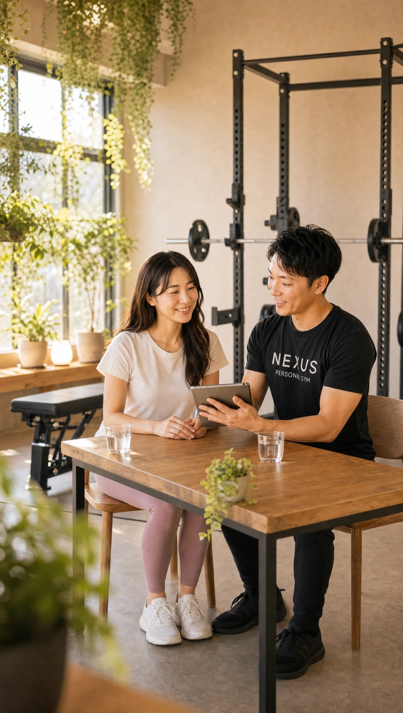
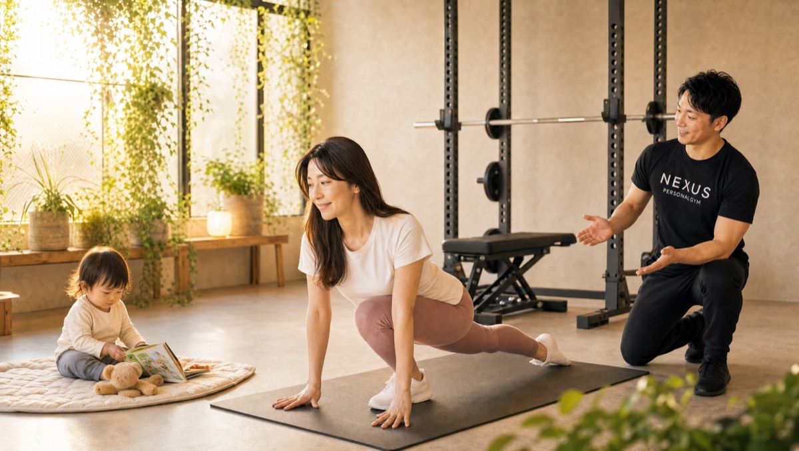
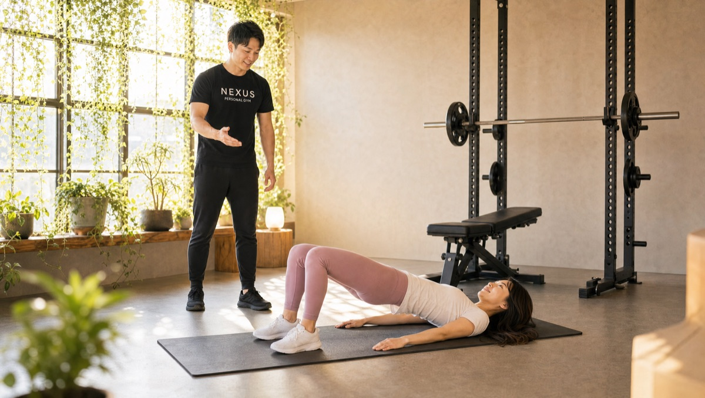
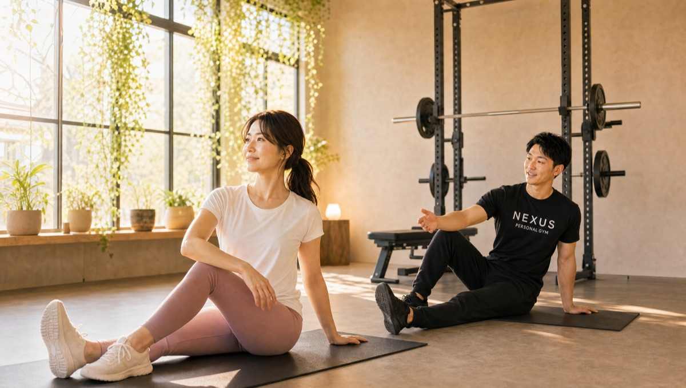
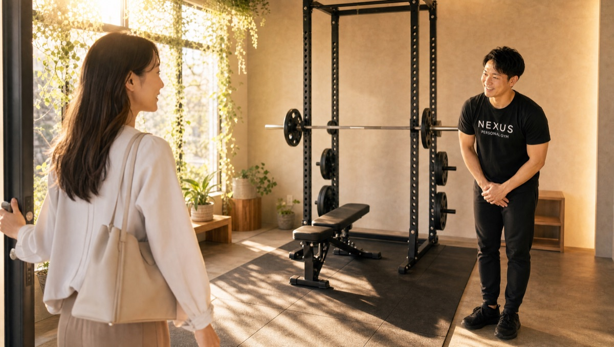

NEXUS Personal Gym ／ 東京都大田区
NEXUSパーソナルジム 雪が谷大塚店｜雪が谷大塚の完全個室・隠れ家ジム
東急池上線・雪が谷大塚駅が最寄り。大田区の住宅街のマンションの一室にある、大きな看板のない隠れ家パーソナルジムです。女性会員85%、運動初心者の30〜40代女性がこっそり通っています。
- 完全個室
- 手ぶら通いOK
- 女性会員85%
- 運動初心者歓迎
- AI食事指導
この店舗の特徴
NEXUS雪が谷大塚店は、東京都大田区の落ち着いた住宅街に佇む完全個室のパーソナルジム。東急池上線沿いの閑静な住宅エリアで、田園調布・久が原にも近い城南エリアにお住まいの、子育て中のママ・在宅ワークの女性・専業主婦の方に選ばれています。大きな看板を出していないため、ご近所に知られずこっそり通えます。ウェア・タオル・プロテインまで無料提供の手ぶら通いOKで、忙しい毎日でもバッグひとつで続けられます。
知る人ぞ知る隠れ家のようなジムです。2026年の今も内装が綺麗で快適な空間。住宅街にあるので、ご近所に知られずこっそり通えるのが気に入っています。
お子さま連れOK

完全個室なので、お子さま連れでも周りを気にせずトレーニングに集中できます。予約のキャンセル・変更は6時間前まで無料。お子さまの急な発熱にも対応しやすい設計なので、子育て中のママも予定を組みやすいと好評です。雪が谷大塚・南雪谷エリアで「子連れで通えるパーソナルジム」をお探しの方にぴったりです。
産後のボディメイク

出産後に気になるヒップラインや骨盤まわりを、無理のない範囲で引き締めていきます。完全個室でトレーナーがマンツーマン指導するので、産後の体型変化もじっくり相談しながら進められます。運動未経験からでも、あなたのペースで大丈夫です。
運動は未経験でしたが、スクワットを一から丁寧に教えてもらえました。数回でヒップラインが締まり、ウエストにくびれが出てきたのを実感。完全個室で人目を気にせず取り組めるのも嬉しいです。
運動ゼロから始める30分

運動がまったく初めてでも大丈夫。ライトコースは30分・1回4,500円（税込）〜と気軽に始められます。雪が谷大塚店は会員の約6割が運動経験ほぼゼロからのスタート。ストレッチから丁寧に、あなたのペースで進めるので、久しぶりに体を動かす方も安心です。
室内はいつも清潔に保たれていて、トレーナーが親切丁寧にサポートしてくれます。安心して効果を実感しながら、トレーニングに集中できる環境です。
AI食事指導
月額3,000円（税込）のAI食事指導は、食事の写真を送るだけ。無理を強いない範囲で、痩せる食べ方をサポートします。トレーニングと組み合わせると、産後や運動不足からのボディメイクも続けやすくなります。
料金プラン
入会金は通常55,000円、無料体験当日入会で15,000円（税込）に割引。全店舗共通の料金です。
アクセス
- 店舗名
- NEXUSパーソナルジム 雪が谷大塚店
- 住所
- 〒145-0066
東京都大田区南雪谷4丁目6−16 2F - 最寄り駅
- 東急池上線 雪が谷大塚駅
- 営業時間
- 8:00〜23:00
- 電話番号
- 050-1790-8499
無料体験の流れ

初めての方も安心してご参加いただけるよう、無料体験は60分程度でゆったり進めます。①カウンセリングで目標やお悩みをお伺いし、②姿勢チェックで体の状態を確認、③トレーニング体験で実際の30分レッスンを体感いただきます。手ぶらでOK、無理な勧誘は一切ありません。当日入会で入会金が55,000円→15,000円（税込）に割引されます。
お客様の声（Google口コミ）
NEXUS雪が谷大塚店はGoogle口コミ★4.6（10件）。運動未経験からのボディメイク成果と、住宅街の隠れ家のような清潔な空間が評価されています。
※お客様の声はGoogle口コミの内容を要約して掲載しています。
すべての口コミはGoogleマップでご覧いただけます雪が谷大塚店のよくある質問
Q雪が谷大塚店はどこにありますか？最寄り駅は？+
Q雪が谷大塚・南雪谷エリアで初心者向けのパーソナルジムを探しています。+
Q雪が谷大塚・南雪谷で完全個室のパーソナルジムはありますか？+
Q雪が谷大塚店の営業時間は？仕事帰りでも通えますか？+
Q雪が谷大塚店の予約はどうやって取りますか？+
Q雪が谷大塚・南雪谷周辺で女性が通いやすいジムを探しています。+
Q雪が谷大塚で子連れで通えるパーソナルジムはありますか？+
Q雪が谷大塚で産後ダイエットができるジムはありますか？+
よくある質問（全店共通）
料金・制度などNEXUS全店に共通するご質問です。さらに詳しくは110問のFAQをご覧ください。
Q料金はいくらですか？+
Q手ぶらで通えますか？+
Qキャンセルはいつまでできますか？+
Q食事指導はありますか？+
Qトレーナーはどんな人ですか？+
Q女性会員は多いですか？+
Q体験の流れは？+
NEXUSパーソナルジムの特徴・料金をもっと見る